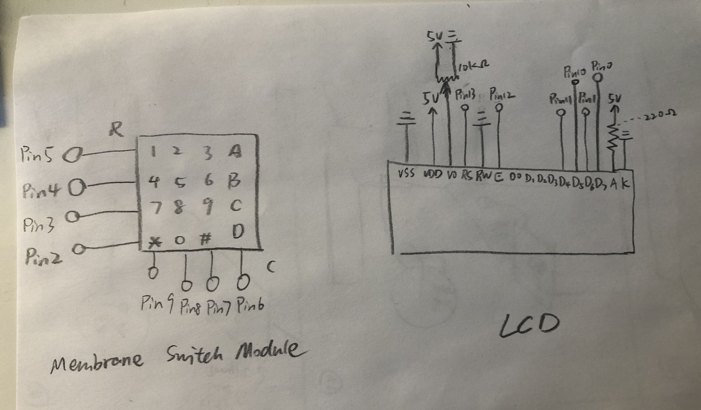
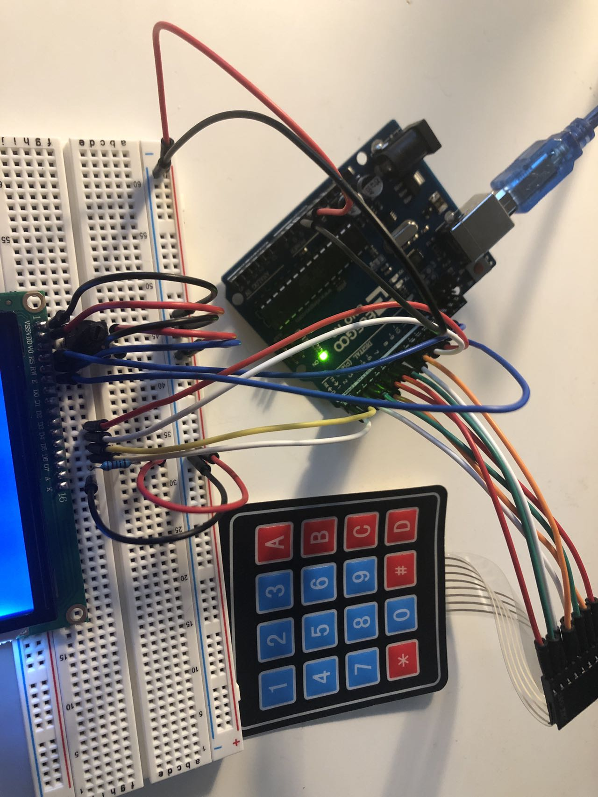

Libraries

The circuit uses a Membrane Switch Module as input and a LCD screen as output.
The characters on the LCD screen will change as different keys on the keypad are pressed.
reference: https://linuxhint.com/interface-keypad-and-lcd-arduino/#:~:text=In%20the%20code%20the%20display,separately%20for%20rows%20and%20columns.

I used a potentiometer with changing resistance up to 10k ohm to control the brightness of the screen.

A GIF showing the operation of the circuit!
The code that makes this work:
#include // import Keypad library
#include // import LCD library
LiquidCrystal lcd(13, 12, 11, 10, 1, 0); // initialize the pins for LCD
const byte numRows= 4; // declare the number of rows
const byte numCols= 4; // declare the number of columns
char keymap[numRows][numCols]= { // set up key pad characters
{'1', '2', '3', 'A'},
{'4', '5', '6', 'B'},
{'7', '8', '9', 'C'},
{'*', '0', '#', 'D'}
};
byte rowPins[numRows] = {5,4,3,2}; // corresponding pins for keypad rows
byte colPins[numCols] = {9,8,7,6}; // corresponding pins for keypad rows
// map the keys on the keypad
Keypad keypad= Keypad(makeKeymap(keymap), rowPins, colPins, numRows, numCols);
void setup() {
lcd.begin(16, 2); // initialize display size
Serial.begin(9600); // initialize the serial monitor
}
void loop() {
char key = keypad.getKey(); // get the key
if (key) { // if key is pressed
Serial.println(key); // print the key in serial monitor
lcd.print(key); // print the key in LCD
}
}